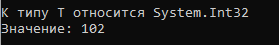

Обобщения
обобщение - по существу, означает параметризированный тип
Простой пример обобщения
class Gen<T>
{
T _obj;
public Gen(T obj)
{
_obj = obj;
}
public T GetObj()
{
return _obj;
}
public void ShowType()
{
Console.WriteLine("К типу Т относится " + typeof(T));
}
}
Пример использования
Gen<int> iObj = new Gen<int>(102);
iObj.ShowType();
int i = iObj.GetObj();
Console.WriteLine("Значение: " + i);
В результате:

Created with the Personal Edition of HelpNDoc: Easily create PDF Help documents